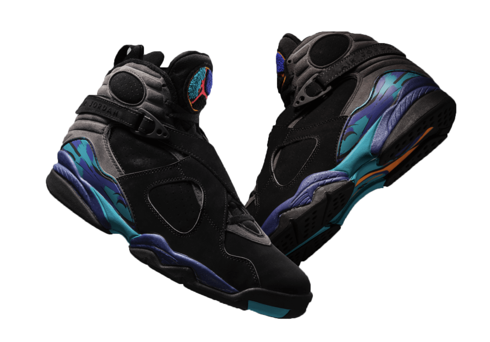
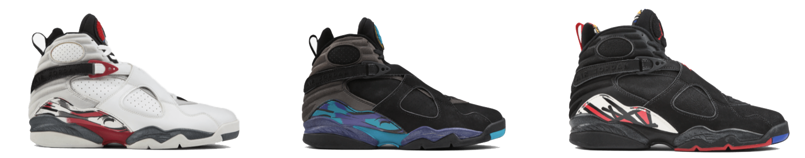
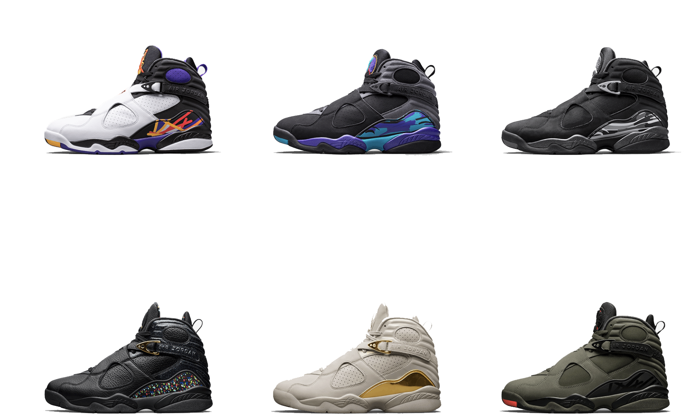
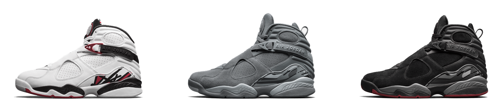

The Chicago Bulls were just the third team history to claim three straight titles, and MJ was the first player ever to capture Finals MVP in 3 consecutive seasons. Strapped into his AJ VIIIs, he claimed his third straight championship and solidified a reputation for being unstoppable.
The 1993 release of the Air Jordan VIII culminated the end of the first epoch of Michael Jordan’s career and sneaker line. Featuring a bold, strapped-up design and a chenille tongue graphic, the Air Jordan VIII would prove to be a distinctly ’90s sneaker, now synonymous with the era in which it was born.



